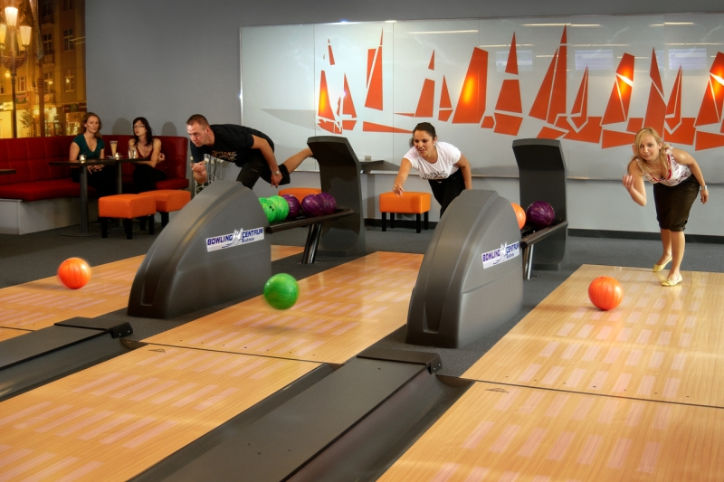
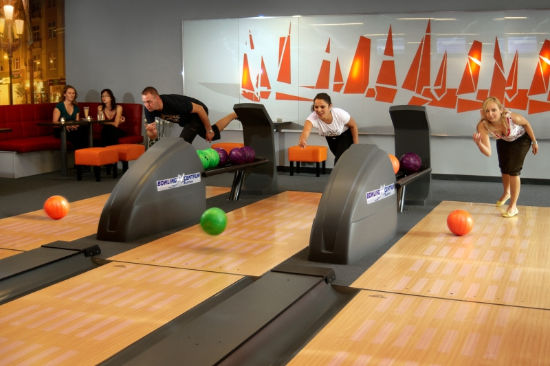
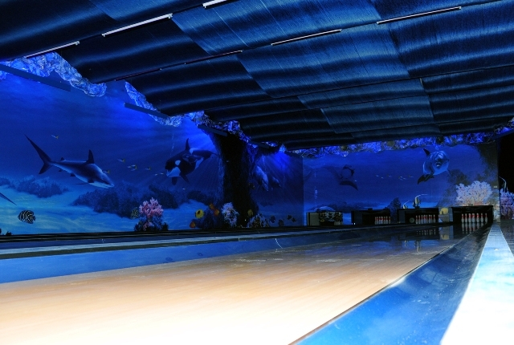
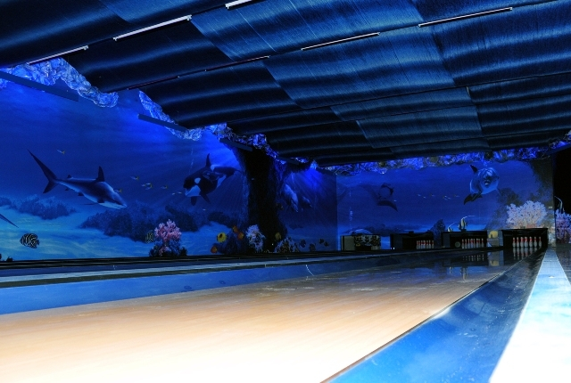

O nas
Szanowni Państwo Od roku 2001 mamy przyjemność budować w Polsce kręgielnie i bowling. Jesteśmy Generalnym Przedstawicielem w Polsce firm:
BOWLING CENTRUM (Czechy)

NGT BOWLING – NEXT GENERATION TECHNOLOGY (Niemcy)
Na całą Polskę
Nasze realizacje odnajdziecie Państwo od „Bałtyku po Tatry”.
Doświadczenie
Prawie 20 lat naszego doświadczenia, 100 klientów zadowolonych, wykonanych ponad 350 torów.
Różne rodzaje torów
Bowling sznurowy, Minibowling, Kręgielnie klasyczną, Micro Bowling,Kręgielnie plenerowe
Pomoc w projektach
Nasza kadra inżynierska przygotuje dla Państwa plan lokalu z usytuowaniem torów, mebli, baru, itp. Ten etap rozmów nie wiążę się dla Państwa z żadnymi kosztami. To nasz koszt zdobycia u Państwa zaufania.
Serwis
Serwis jest do Państwa dyspozycji przez wszystkie 7 dni tygodnia. Posiadamy magazyn części zamiennych na miejscu w Ostrowie Wlkp., wykwalifikowanych montażystów i serwisantów zatrudnionych w naszej firmie.
Mocne Strony
Nasze atuty to doświadczenie, jakość, elastyczność, uczciwość i rzetelność.
Zespół
Przemek
Własciciel Doradztwo i
sprzedaż kręgielni
Wojtek
Własciciel Doradztwo i
sprzedaż kręgielni

Darek
Serwis, montaże, modernizacje
Oferta torów
Bowling sznurowy
Oferowany przez nas bowling sznurowy to idealne połączenie wysokiej jakości urządzeń i rozwiązań technicznych oraz nowoczesnego design za wyjątkowo atrakcyjną cenę Jesteśmy liderem w tym segmencie w Polsce. Jest to najlepsze rozwiązanie dla mniejszych (do 8 torów) obiektów rekreacyjnych, klubowych, komercyjnych i hotelowych Tory w różnych konfiguracjach, z opcjami białych powierzchni HPL, oświetlenia LED RGB, systemów rzutów celnych Bumper, różnych wersji oprogramowania systemu wyświetlania wyników gry i zarządzania kręgielnią. Zadzwoń przygotujemy szczegółowa specyfikacją pod Twoje potrzeby od torów podstawowych po najbardziej innowacyjne .
Bowling sznurowy o napędzie pneumatycznym
Niemiecka jakość, światowa innowacja firmy NGT, lidera w sprzedaży maszyn sznurowych w Europie. Technologia AIR-O-SETTER firmy NGT już w Polsce.
Kręgielnie klasyczne
Produkt może dziś już nie tak modny. Mający jednak sporo entuzjastów. Nasze kręgielnie klasyczne umożliwiaja grę sportową, wyposażone są we wszystko co jest niezbędne do przeprowadzenia klasycznych zawodów kręglarskich.
Mini Bowling
W przypadku posiadania lokalu o małej powierzchni w której niemożliwy jest montaż tradycyjnego bowlingu proponujemy minibowling o długości 12-17 m, jest to oferta torów mniejszych jednak z pełną automatyką, elektroniką systemem liczenia i wyświetlania wyników gier.
Micro Bowling
To wyjątkowe rozwiązanie, połączenie bowlingu i przyjemności gry w bilard. Strącanie kręgli kijem i kulą? bilardową, wg. zasad bowlingowych, to po prostu gra w bowling w micro rozmiarze (zbliżonym do stołu bilardowego)
Kręgielnie plenerowe
Kręgle w plenerze, tak to możliwe specjalna modułowa konstrukcja, automatyka, pozwalająca na w pełni automatyczną obsługę kręgielni. Oferta dla ośrodków wypoczynkowych, parków rozrywki wszystkich, którzy chcieliby rozszerzyć swą ofertę rekreacji w plenerze.

Bowling używany
W ofercie czasowej posiadamy tory bowlingowe używane tory sprawdzone, wszystkie podzespoły sprawne zmodernizowane przygotowane tak aby ślady użytkowania dla Twojego klienta w lokalu były jak najmniej widoczne na życzenie niektóre elementy nowe: monitory, wykończenia torów, kule, kręgle Na wszystkie tory minimum gwarancja rozruchowa. U nas kupujesz bowling używany ale sprawdzony bez wad ukrytych i niespodzianek, z gwarancją i profesjonalnym montażem. …
Bowling w wersji mini – używany
Bowling w stanie bardzo dobrym, ciagle serwisowany przez autoryzowany serwis. tory sprawdzone, wszystkie podzespoły sprawne tory ok 2 letnie stan, jak na używany bowling, rzadko spotykany kontakt do osoby sprzedajacej: +48668396351 możliwość skorzystania z autoryzowanego demontażu i montazu z gwarancją rozruchu w nowym miejscu Bowling godny uwagi polecamy!
Inne
Oferta mebli
Oferujemy Państwu meble o podwyższonej jakości, wykonywane na zamówienie do lokali użyteczności publicznej, klubów, pubów, restauracji. Trwała konstrukcja, uczciwe, grube wypełnienie pianką, wysokiej jakości materiały obiciowe. Cena zawiera koszt materiału, jak również dowozu i montażu. Do wyboru kilkadziesiąt kolorów oraz wiele rodzajów materiałów obiciowych.
Oferta Urządzeń Rozrywkowych
U nas zakupią Państwo wysokiej klasy urządzenia zarobkowe, które spełnią oczekiwania zarówno właścicieli lokali, jak również ich gości. Oferujemy tylko trwałe i niezawodne urządzenia wiodących marek, Kręgielnia powinna zapewnić także gościom dodatkowe atrakcje a inwestorowi dodatkowy zysk. Dlatego proponujemy zaplanować takie urządzenia w klubie jak : – profesjonalne stoły bilardowe – solidne, z kamienną płytą, z akcesoriami, oświetleniem, w wielkościach od 6 FT do 9 FT, – profesjonalne stoliki piłkarskie, – dart stacjonarny – duży, wyposażone w elektroniczny wrzutnik monet oraz automatyczny system naliczania punktów; – flippery automaty zręcznościowe
Akcesoria
Akcesoria i części zamienne do kręgielni.
U nas zakupią Państwo kręgle , kule, obuwie bowlingowe, skarpetki jednorazowe, spraye do
odświeżania obuwia oraz inne niezbędne elementy wyposażenia kręgielni, jak również części
zamienne. Zawsze wysokiej jakości i w dobrych cenach.
W ofercie części do kręgielni Bowling Centrum Trutnov, SES, Vollmer, Vilati, inne.
Zapraszamy do zapoznania się z ofertą telefonicznie lub mailowo:
Kontakt e-mail
739 671 703
Zapraszamy do polubienia naszej strony z akcesoriami bowlingowymi na facebooku – będą Państwo
zawsze na bieżąco z aktualnymi promocjami.
Aranżacje
Malowanie ręczne UV
Podstawowe cechy malowania ręcznego
- bardzo atrakcyjny efekt UV
- możliwość stworzenia niepowtarzalnego motywu, z możliwościa korekty , uzupełniania, itd.
- malowanie odbywa się przez artystę grafika
- malowanie ręczne wymaga odpowiedniego przygotowania ścian, które musza być wyszpachlowane, zagruntowane, pomalowane na ciemny kolor
FOLIA XFOL
Miło nam poinformowa że jako jedyni w Polsce wprowadziliśmy grafikę w formie napinanej wytrzymałej dobrze utrzymującej nadruki folii X-FOL. Zaaranżujemy Państwu lokal, tworząc niepowtarzalne miejsce, do którego klienci chętnie będą powraca
- brak jakichkolwiek łączeń na całej długości folii, co wyróżnia tę technikę od powszechnie wykorzystywanych tapet.
- nie ma potrzeby wykańczania ścian, wystarczy równe podłoże na którym montujemy profile, pomiędzy którymi następnie napinana jest folia. ogranicza to znacznie koszt przygotowania ścian, nie potrzeba ich szpachlować, gruntować, malować.
- w celu montażu folii na ścianie przedniej maszynowni wystarczy przygotowanie drewnianego obramowanie z łat po obwodzie
- szybki czas montażu, to kolejne ograniczenie kosztów
- folia jest bardzo trwała, daje możliwość demontażu, przenoszenia w inne miejsce
Oświetlenie LED
Wersja MAGIC LED-RGB
Zmienna barwa RGB, zmiana koloru płynnie na całej długości ścieżki jednocześnie z możliwością efektu ruchu świateł na długości ścieżki, niekonwencjonalne efekty oświetlenia np. efekt przelatującego światła czy różny efekt świetlny w różnych kolorach na różnych częściach taśmy, możliwa zmiana/wybór koloru i efektu dla każdego toru oddzielnie)
Planowanie
Proces planowania inwestycji jest bardzo ważny.
Naszym Inwestorom pomagamy na każdym etapie Inwestycji
* projekt
* finansowanie
* wybór rodzaju technologii bowlingowej
* dodatkowe wyposażenie lokalu w meble, urządzenia rozrywkowe
aranżacja pomieszcznia
Zaplanujemy centrum rozrywki
Prześlij nam plan lokalu w formacje dwg lub pdf albo po prostu szkic lokalu
Wrysujemy tory
Zaplanujemy siedziska, bar, urządzenia rozrywkowe (bilardy, darty, …)
Skontaktuj nas z projektantem budynku uzgodnimy wymogi pod bowling na etapie projektu
architektonicznego
Rzomieszczenie
Tory bowlingowe
Wybór nie jest łatwy, pomożemy dobrać
tory w konfiguracji
najbardziej korzystnej dla Państwa odpowiadającej realnym potrzebom. Urządzenia mogą być
drogie lub tanie, łatwe lub trudne w eksploatacji, klasyczne lub innowacyjne,
sterowanie.
System wyświetlania wyników: podstawowy lub rozbudowany. Nawierzchnie torów w kolorze
drewna
z efektem UV lub białe pod LED/UV. Wyposażenie podstawowe lub rozszerzone. Doradzimy jak
dobrać bowling na miarę
Wybór torów

Potrzebne jest finansowanie
inwestycji ?
Pomożemy, od lat współpracujemy z jednym z leaderów rynku leasingowego firmą EFL (Europejski Fundusz Leasingowy) jesteśmy autoryzowanym dostawcą więc procedura jest do maximum uproszczona.
Aranżacja
Kręgielnia/bowling to nie tylko
tory urządzenia
Klienci chętnie odwiedzają lokal, w którym jest miła atmosfera ale także atrakcyjny
wystrój .Grafika,meble. oświetlenie, dźwięk sprawia że czuja się dobrze i chętnie
zostają dłużej i wracają do klubu.
Pomożemy zaprojektować i wykonamy aranżacje lokalu aby w Państwa lokalu miejsca trzeba
było rezerowować na dużo wcześniej ze względu na atrakcyjność i powodzenie lokalu.
Posiadamy w ofercie atrakcyjną napinaną grafikę X-FOL. Druk nawet 30m bez łączeń.
Proponujemy nowoczesne oświetlenie LED RGB wielokolorowe zdalnie sterowane z pilota.
Aranżacje

Wyposażenie lokalu
Cześcią aranżacji są nie tylko
ściany, sufit, podłoga ale także wygodne meble, urządzenia rozrywkowe: bilard, dart,
cymbergaj, piłkarzyki. To wszystko pracuje na sukces lokalu, sukces Państwa
inwestycji.Wyposażenie lokalu w w/w elementy jest częścią naszej oferty, którą kierujemy
do Państwa.
Wyposażenie

Pliki PDF
Galeria

 

.jpeg) 



.jpg)